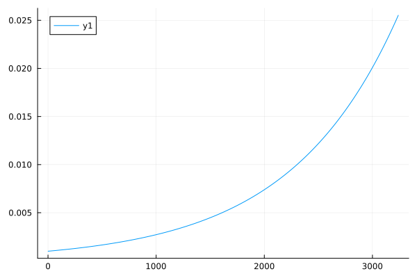
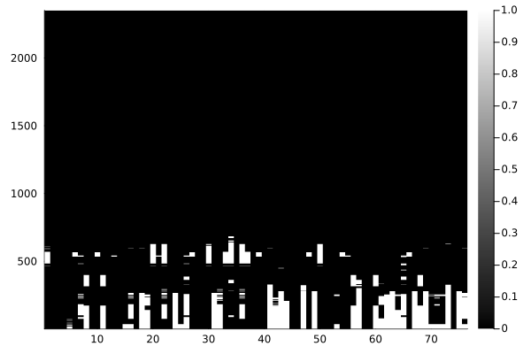

Spatiotemporal Panel Datasets
We often also need to missing data in spatiotemporal data. For this example, we'll use daily temperature values from major cities around the world.
TODO: Give a different workflow/example using a DataFrame.
julia> using AxisKeys, Impute, NamedDims, Plots, Statistics, StatsBase
julia> # So NamedDimsArray is the outer wrapper
AxisKeys.nameouter() = true
julia> # Construct a KeyedArray of our dataset as we want to track gaps (or missing rows)
# in the source CSV data.
data = wrapdims(
Impute.dataset("test/table/temperature"),
:AverageTemperature,
:dt,
:City;
default=missing,
sort=true,
)
2-dimensional NamedDimsArray(KeyedArray(...)) with keys:
↓ dt ∈ 3239-element Vector{Dates.Date}
→ City ∈ 100-element Vector{String}
And data, 3239×100 Array{Union{Missing, Float64},2}:
("Abidjan") ("Addis Abeba") … ("Wuhan") ("Xian")
Date("1743-11-01") missing missing missing missing
Date("1743-12-01") missing missing missing missing
Date("1744-01-01") missing missing missing missing
Date("1744-02-01") missing missing missing missing
Date("1744-03-01") missing missing … missing missing
Date("1744-04-01") missing missing missing missing
⋮ ⋱ ⋮
Date("2013-03-01") 29.129 21.18 13.527 10.11
Date("2013-04-01") 28.626 20.57 17.136 12.563
Date("2013-05-01") 27.652 19.774 … 23.173 18.979
Date("2013-06-01") 26.157 18.736 26.817 23.522
Date("2013-07-01") 24.951 18.148 31.171 25.251
Date("2013-08-01") 24.541 19.005 31.05 24.528
Date("2013-09-01") missing missing missing missing
julia> # Rename our dims
data = rename(data, :dt => :time, :City => :loc)
2-dimensional NamedDimsArray(KeyedArray(...)) with keys:
↓ time ∈ 3239-element Vector{Dates.Date}
→ loc ∈ 100-element Vector{String}
And data, 3239×100 Array{Union{Missing, Float64},2}:
("Abidjan") ("Addis Abeba") … ("Wuhan") ("Xian")
Date("1743-11-01") missing missing missing missing
Date("1743-12-01") missing missing missing missing
Date("1744-01-01") missing missing missing missing
Date("1744-02-01") missing missing missing missing
Date("1744-03-01") missing missing … missing missing
Date("1744-04-01") missing missing missing missing
⋮ ⋱ ⋮
Date("2013-03-01") 29.129 21.18 13.527 10.11
Date("2013-04-01") 28.626 20.57 17.136 12.563
Date("2013-05-01") 27.652 19.774 … 23.173 18.979
Date("2013-06-01") 26.157 18.736 26.817 23.522
Date("2013-07-01") 24.951 18.148 31.171 25.251
Date("2013-08-01") 24.541 19.005 31.05 24.528
Date("2013-09-01") missing missing missing missingOkay, so let's take a look at how much temperature data is missing.
julia> heatmap(ismissing.(data); color=:greys);
/home/travis/.julia/packages/GR/oiZD3/src/../deps/gr/bin/gksqt: error while loading shared libraries: libQt5Widgets.so.5: cannot open shared object file: No such file or directory
connect: Connection refused
GKS: can't connect to GKS socket application
Did you start 'gksqt'?
GKS: Open failed in routine OPEN_WS
GKS: GKS not in proper state. GKS must be either in the state WSOP or WSAC in routine ACTIVATE_WS
So many cities are missing a lot of historical data. A common operation is to remove locations with too many missing historical observations. In our case, we also want to penalize observations closer to the present.
Lets start be define a set of exponential weights for our observations:
julia> wv = eweights(1:length(data.time), 0.001)
3239-element StatsBase.Weights{Float64,Float64,Array{Float64,1}}:
0.001
0.0010010010010010012
0.0010020030040050062
0.0010030060100150212
0.0010040100200350561
0.0010050150350701262
0.0010060210561262525
0.001007028084210463
0.0010080361203307936
0.00100904516549629
⋮
0.025320543884476
0.02534588977425025
0.025371261035285534
0.02539665769297851
0.025422079772751266
0.025447527300051315
0.02547300030035167
0.025498498799150816
0.02552402282197279
julia> plot(wv);
/home/travis/.julia/packages/GR/oiZD3/src/../deps/gr/bin/gksqt: error while loading shared libraries: libQt5Widgets.so.5: cannot open shared object file: No such file or directory
connect: Connection refused
GKS: can't connect to GKS socket application
Did you start 'gksqt'?
GKS: Open failed in routine OPEN_WS
GKS: GKS not in proper state. GKS must be either in the state WSOP or WSAC in routine ACTIVATE_WS
Now we want to filter out locations (columns) according to those weights. For now, we'll say that a location should be removed if the weighted ratio exceeds 0.1.
julia> data = Impute.filter(data; dims=:cols) do v
mratio = sum(wv[ismissing.(v)]) / sum(wv)
return mratio < 0.1
end
3239×76 Array{Union{Missing, Float64},2}:
missing missing missing … -0.106 missing missing
missing missing missing missing missing missing
missing missing missing missing missing missing
missing missing missing missing missing missing
missing missing missing missing missing missing
missing missing missing … 5.892 missing missing
missing missing missing 12.05 missing missing
missing missing missing 17.857 missing missing
missing missing missing 19.13 missing missing
missing missing missing missing missing missing
⋮ ⋱ ⋮
19.645 6.601 15.039 … -4.681 4.21 -1.635
22.726 9.802 16.083 -6.743 7.2 2.362
27.196 12.537 18.477 -1.862 13.527 10.11
30.762 17.326 19.111 4.657 17.136 12.563
33.856 22.917 23.647 13.818 23.173 18.979
31.099 27.292 25.329 … 17.367 26.817 23.522
28.073 29.85 26.369 20.46 31.171 25.251
27.512 29.704 27.453 18.52 31.05 24.528
missing missing missing 14.599 missing missingOkay, so we removed almost 25% of the locations that didn't meet our missing data requirement. However, most of our observations from the 1700's are still mostly missing. Let's remove those rows that have more 50% of the locations missing.
julia> data = Impute.filter(data; dims=:rows) do v
mratio = count(ismissing, v) / length(v)
return mratio < 0.5
end
2350×76 Array{Union{Missing, Float64},2}:
24.87 10.177 14.846 4.227 missing … -5.819 missing missing
29.427 14.739 17.279 8.51 missing 3.296 missing missing
32.624 21.196 21.032 13.926 missing 10.849 missing missing
30.632 25.119 22.803 17.446 missing 14.691 missing missing
26.727 26.668 24.09 19.338 missing 16.548 missing missing
26.131 27.732 25.412 20.231 missing … 17.241 missing missing
30.113 14.947 17.279 7.811 missing 3.94 missing missing
31.448 19.175 19.425 12.209 missing 10.005 missing missing
29.809 24.089 22.318 16.676 missing 14.691 missing missing
27.227 27.582 24.566 20.551 missing 17.132 missing missing
⋮ ⋱ ⋮
22.325 8.05 16.763 2.333 12.851 -1.003 5.048 -0.822
19.645 6.601 15.039 0.897 11.518 -4.681 4.21 -1.635
22.726 9.802 16.083 4.325 14.889 -6.743 7.2 2.362
27.196 12.537 18.477 7.216 17.636 -1.862 13.527 10.11
30.762 17.326 19.111 11.558 22.769 … 4.657 17.136 12.563
33.856 22.917 23.647 17.464 28.673 13.818 23.173 18.979
31.099 27.292 25.329 20.104 33.803 17.367 26.817 23.522
28.073 29.85 26.369 21.948 36.392 20.46 31.171 25.251
27.512 29.704 27.453 22.625 35.463 18.52 31.05 24.528Now let's take a look at what data remains.
julia> heatmap(ismissing.(data); color=:greys);
/home/travis/.julia/packages/GR/oiZD3/src/../deps/gr/bin/gksqt: error while loading shared libraries: libQt5Widgets.so.5: cannot open shared object file: No such file or directory
connect: Connection refused
GKS: can't connect to GKS socket application
Did you start 'gksqt'?
GKS: Open failed in routine OPEN_WS
GKS: GKS not in proper state. GKS must be either in the state WSOP or WSAC in routine ACTIVATE_WS
Alright, we can work with the remaining missing values now. Now we could try simply imputing the values columnwise for each city using something like Impute.nocb
julia> heatmap(Impute.nocb(data; dims=:cols));
/home/travis/.julia/packages/GR/oiZD3/src/../deps/gr/bin/gksqt: error while loading shared libraries: libQt5Widgets.so.5: cannot open shared object file: No such file or directory
connect: Connection refused
GKS: can't connect to GKS socket application
Did you start 'gksqt'?
GKS: Open failed in routine OPEN_WS
GKS: GKS not in proper state. GKS must be either in the state WSOP or WSAC in routine ACTIVATE_WSBut, this looks rather crude and creates clear artifacts in the dataset. Since we suspect that observations in similar locations would have had similar recordings we could use Impute.svd or Impute.knn to find similarities across multiple locations.
julia> data = Impute.knn(data; dims=:cols, k=4);
julia> heatmap(data);
/home/travis/.julia/packages/GR/oiZD3/src/../deps/gr/bin/gksqt: error while loading shared libraries: libQt5Widgets.so.5: cannot open shared object file: No such file or directory
connect: Connection refused
GKS: can't connect to GKS socket application
Did you start 'gksqt'?
GKS: Open failed in routine OPEN_WS
GKS: GKS not in proper state. GKS must be either in the state WSOP or WSAC in routine ACTIVATE_WS
This method appears to have removed the artifacts found with the basic NOCB method alone. Now we have a complete dataset ready for downstream processing :)